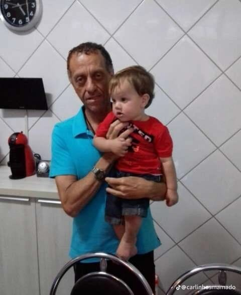

Biografia de Carlos
Carlos Pinheiro ou conhecido como Carlinhos nasceu em 10/10/1959 em Araçatuba(Sp) e atualmente ele mora na Zona Norte de São Paulo, no bairro Parada Inglesa
Seu cantor favorito é o Roberto Carlos
Ele é muito fanático pelo Corinthians, clube que ele torce
Antes da morte de sua esposa Marli que ocorreu em 07/05/2003 após sofrer um acidente de carro, Carlinhos vivia uma vida normal trabalhando em uma empresa
Após a morte de sua esposa, Carlinhos desenvolveu Estresse pós-traumatico
Carlinhos é frequentemente encontrado em estações de metrô da zona Norte de São Paulo
Carlinhos começou com esses audios em 2005
Curiosidade
- A Dalva não é sua esposa, ela é apenas uma amiga da família de Carlinhos.